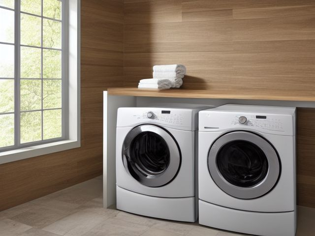

Laundry Room micro zone
The Washer and Dryer
Run loads reliably, and stay maintained well enough that the machines are never the reason laundry stops.
One session: 45-75 min. most of it behind the machines, where the duct and the fill hoses live

What done looks like
Both drums empty with the washer door propped ajar, nothing at all sitting on either lid, a clean lint screen back in its slot, and a strip of masking tape on the side of the dryer with the month you last cleared the duct written on it.
Check these before you start
- Burn or fireLint packed in the duct behind the dryer, and lint on the heating element side of the screen housing. This is the highest heat and the most fuel in any indoor room outside the kitchen.
- Water and electricityRubber fill hoses that have gone hard or bulged at the collar, sitting a hand's width from a wall outlet. A split hose sprays under pressure and does not stop until you reach the tap.
- Fall, cut, or crushA machine that walks across the floor on an unbalanced spin because a foot is not level, and the sharp sheet metal edge underneath when you tilt it back to check.
What to have on hand before you start
These are types of thing, not brands. If you already own something that does the job, that is the right one to use. Each says which pass needs it and what to watch out for.
- Dryer duct cleaning brush
Clear packed lint from a dryer duct and the screen housing, in the Shine, Safety and Sustain passes.
Unplug the dryer before clearing the duct; clearing and inspection only, not appliance repair. - Washer drum cleaning tablet
Clear biofilm and odour from a washing machine drum on a hot empty cycle, in the Shine and Sustain passes.
Run on an empty drum only; never combine with other cleaning products in the same cycle. - Color-coded microfiber cloth set ×12
Wipe, dust, and dry surfaces, in the Shine pass.
Wash by use color; avoid fabric softener. - Neutral pH multi-surface cleaner
Routine cleaning of sealed surfaces, in the Shine and Sustain passes.
Verify surface compatibility; lock around children and pets. - Compact vacuum with attachments
Remove dust, crumbs, and debris, in the Shine pass.
Use appropriate attachment. - Keep, Relocate, Donate, Recycle, Trash container set ×5
Support rapid item routing during Sort, in the Sort pass.
Do not block exits. - Portable cleaning caddy
Transport and contain cleaning inputs, in the Straighten, Shine and Sustain passes.
Secure chemicals from children and pets. - Portable label maker
Create durable standardized labels, in the Standardize and Sustain passes.
Follow surface and adhesive guidance. - Removable write-on labels
Create temporary or adjustable visual controls, in the Standardize pass.
Test on delicate finishes.
Only if your washer and dryer has one: 8 more
Not every washer and dryer needs these. Each one is here because some do, and the reason is next to it.
- Drying Rack
Air-dry delicate or non-dryer items, in the Straighten, Standardize and Sustain passes.
Do not overload; anchor wall-mounted or tall systems where required. - Chemical Storage Bin ×2
Separate and contain household chemicals, in the Straighten, Standardize and Sustain passes.
Do not overload; anchor wall-mounted or tall systems where required. - Wall Hook Rail
Create labeled hanging homes, in the Straighten, Standardize and Sustain passes.
Do not overload; anchor wall-mounted or tall systems where required. - Broom and Tool Wall Clips
Secure cleaning tools vertically, in the Straighten, Standardize and Sustain passes.
Do not overload; anchor wall-mounted or tall systems where required. - Leak Tray
Protect cabinets and expose plumbing leaks, in the Straighten, Standardize and Sustain passes.
Do not overload; anchor wall-mounted or tall systems where required. - Folding Laundry Basket ×3
Move clean laundry back to rooms, in the Straighten, Standardize and Sustain passes.
Do not overload; anchor wall-mounted or tall systems where required. - Laundry Hamper Sorter
Separate laundry by household method, in the Straighten, Standardize and Sustain passes.
Do not overload; anchor wall-mounted or tall systems where required. - Min-Max Inventory Label
Control replenishment and backstock, in the Standardize and Sustain passes.
Install and use according to product instructions.
The six passes, in order
Work them in this order. Sorting after you have arranged things means arranging things you were about to remove.
Sort
Decide what stays. Everything else leaves the zone now.
Clear the tops of both machines and the inside of both drums. The single sock behind the agitator, the hardened box of dryer sheets, the bottle of softener you stopped using: all of it comes off the machines now rather than being shuffled sideways.
Straighten
Give what stays a home, placed where the hand actually reaches.
Machine lids carry nothing. Put the vent brush and the pack of machine cleaner tablets on the shelf above, so the lids open freely and a knocked cap cannot roll down behind the drum where nobody retrieves it.
Shine
Clean it, and use the cleaning to inspect what you cannot see when it is full.
Lift the folds of the door gasket and wipe out the coins, hairpins, and grey slime that collect in there. Wash the detergent drawer in the sink, then run a hot cycle with a cleaner tablet in the empty drum.
Surface by surface, all 8 of them, with what to use on each.
Safety
Make the zone safe for everybody who uses it, including the shortest person.
Clear the lint screen every single load, then check the duct behind the dryer for the soft grey packing that builds where the pipe bends. Lint plus heat is a fire, and a crushed foil accordion duct traps far more of it than a smooth rigid pipe does.
Standardize
Write down the best way you know today, so it survives you forgetting.
Write the month on masking tape stuck to the side of the dryer each time you clear the duct, so the next check is a glance instead of an argument with your memory. A standard is the best way you know today, written down.
Sustain
Attach the reset to something that already happens, so it keeps itself.
When the dryer buzzer sounds, the lint screen gets cleared before the door closes again. That one motion, every load, is the whole machine standard.
The duct you have not looked at
You have been telling yourself the dryer just runs a bit slow these days, and that towels have always needed two cycles. The dryer is not slow, it is blocked. The rule: if you cannot name the month you last pulled the machine out and cleared the duct, that is today's job, no debate. And while the dryer is already out and the duct is disconnected, look at what it is made of. If it is the flexible foil accordion kind, replace it with rigid metal now rather than promising yourself you will do it next time, because there is rarely a next time. Once a year is a cheap habit, and the failure it prevents burns the room it happens in.
Cleaning it properly, surface by surface
Two machines that look clean hide their dirt in three places: the gasket folds, the detergent drawer, and the drum itself. Work top down, save the gasket and the lint screen for last, and finish with a hot empty cycle.
Work down, not across. Whatever comes off a high surface lands on the one below it, so cleaning the floor first means cleaning it twice.
Carry these in with you. Neutral pH multi-surface cleaner; Color-coded microfiber cloth set; Compact vacuum with attachments; Portable cleaning caddy; Small detail brush; Washer drum cleaning tablet.
- The tops and lids of both machines
Clear everything off first. Mist neutral pH cleaner onto a microfiber cloth rather than onto the machine, wipe from the back edge forward, then buff dry with a second cloth so no film is left where the next basket lands. - The control panel, dials, and door handles
Go over the buttons and dials with a dry cloth to lift lint, then a barely damp microfiber over the handle and the panel where hands leave grime. Keep water out of the dial seams and work a small detail brush into the ridges where grime has set. - The detergent drawer and its cavity
Pull the drawer out to its stop and lift it free. Wash it in the sink in warm water to shift the caked powder and the blue softener gel, scrub the siphon cap with the detail brush, and wipe inside the empty cavity where black mould films the roof of it before you slide it back. - The washer door gasket folds and glass
Peel back each fold of the rubber boot and wipe out the coins, hairpins, and grey slime, working right around the seal. Wipe the inside of the glass where detergent scum clouds it, dry the folds so they do not sit wet, then prop the door ajar so the drum breathes. - The washer drum interior
Wipe the drum with a damp cloth, then run the longest, hottest cycle empty with a washer drum cleaning tablet, or the machine's own clean setting, to clear the biofilm your cloth cannot reach. - The dryer lint screen and its housing
Pull the screen and peel the lint mat off it. If dryer sheets have left a waxy film, wash the mesh under running water and dry it fully. Vacuum inside the empty slot with the crevice tool before the screen goes back. - The dryer drum and its door
Wipe the dryer drum with a barely damp microfiber to lift the fabric softener film and stray lint, then dry it. Clean the inside of the door and its seal where lint packs into the lip, and leave the door open afterward so the drum airs. - Behind and underneath the machines, and the floor
Ease the machines out on their feet, vacuum the dust and lint drift off the back panel and the slab, and wipe the skirting and the floor where damp collects.
Inspect as you clean. Cleaning is the only time you see the zone empty, so use it.
- A water stain or damp ring on the floor under the washer that dries and comes back points to a slow leak at a hose collar or the pump seal. Mark it and note the date.
- Rust bleeding from under the detergent drawer or around the drum lip is the enamel giving way. Flag it before it stains the next white load.
- A musty smell that survives a hot clean cycle means biofilm deeper than the drum reaches. Note it.
- A scorch mark or a warm brown patch on the dryer cabinet, or a power cord that feels stiff or looks scuffed near the plug. Flag any of these.
The standard that keeps it fixed
Both drums empty, washer door ajar, lint screen cleared, before you leave the room.
Reset trigger. when the dryer buzzer sounds and you are still standing next to it
The rest of the laundry room, in working order
Each of these is one session on its own. Finish this zone before you open the next.
- The Washer and Dryer, you are here
- The Detergent and Treatment Zone
- The Sorting and Hamper Zone
- The Folding Surface
- The Hanging and Air-Dry Zone
- The Utility and Cleaning Zone
The Laundry Room in full, with what each of the 6 zones is for
Related reading
- What is 6S?
- This zone's safety pass, in full
- Is one spot in this zone always the one you skip?
- Why this zone gets messy again
- Decluttering vs. organizing
- Before you buy storage for this zone
- Still does not fit, even after the honest count?
- Does something in this zone actually get used somewhere else?
- Stuck on one item in this zone?
- Written the standard, but nobody else follows it?
- Does everyone in the house agree what "done" looks like here?
- Does more than one person use this zone?
- Found a duplicate of something in this zone?
- Why the standard above names one home per category
- Is the everyday item in this zone actually the easy one to reach?
- Not sure whether to keep something in this zone?
- Does this zone keep running out of something?
- Started this zone and stalled partway through?
- Have you stopped noticing the clutter in this zone?
When you want it off the screen
Carry The Washer and Dryer into the room
The method above is complete and free. The Whole House Print Pack puts The Washer and Dryer and the other 113 micro zones on 684 printable cards, so the steps you just read are not stuck behind a phone screen while your hands are full.
The Print Pack, 19 dollarsJust this zone, 4 dollarsOr draw a card free
The Washer and Dryer on its own is 4 dollars for 6 cards. All 114 micro zones is 19 dollars for 684. The whole house is the better buy; the single zone is here so you can take only what you are working on.
If The Washer and Dryer keeps fighting back, the real problem usually sits somewhere else in the room. A one hour virtual consult is 250 dollars: we find the function, the friction and the root cause together, and you keep a written standard for the space. See what a consult covers.